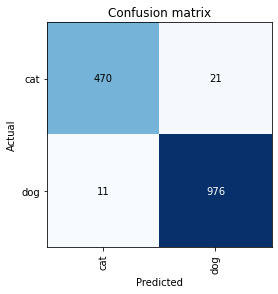
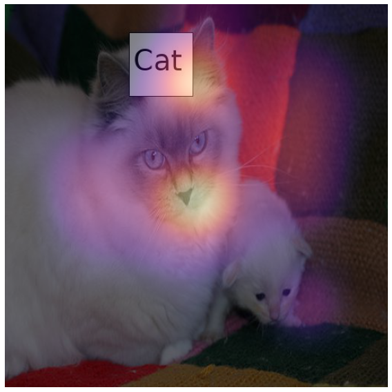
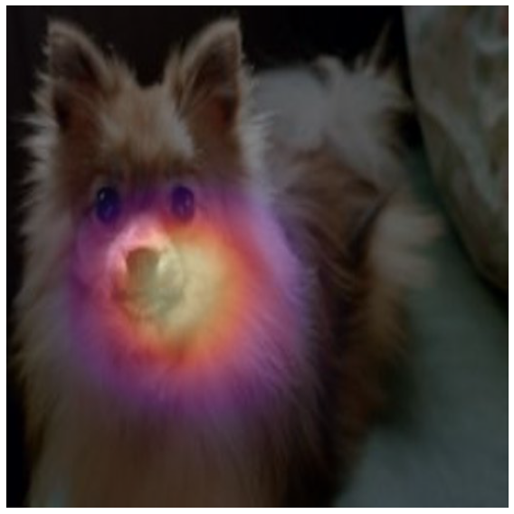
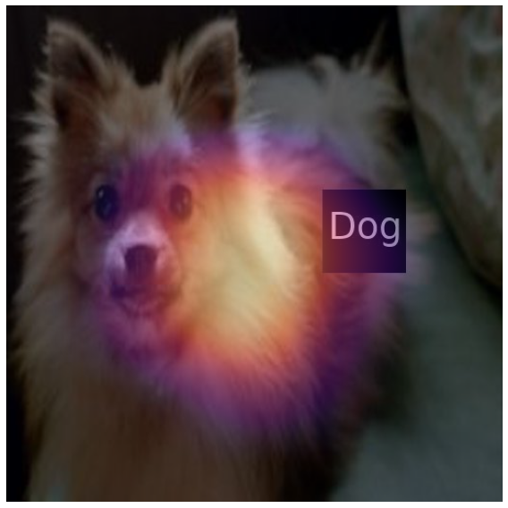

import torch
from fastai.vision.all import *
import cv2
import numpy as np
import os
os.environ['CUDA_LAUNCH_BLOCKING'] = "1"
os.environ["CUDA_VISIBLE_DEVICES"] = "0"
import cv2
import numpy as np
import matplotlib.pyplot as plt
from PIL import ImageDraw
from PIL import ImageFont
from PIL import ImageFile
from PIL import Image
ImageFile.LOAD_TRUNCATED_IMAGES = True
from torchvision.utils import save_image
import os
import torchvision.transforms as transformsdef label_func(f):
if f[0].isupper():
return 'cat'
else:
return 'dog' path=Path('original_pet')
files=get_image_files(path)
dls=ImageDataLoaders.from_name_func(path,files,label_func,item_tfms=Resize(512)) path_r=Path('random_pet_one') #랜덤박스넣은사진
files_r=get_image_files(path_r)
dls_r=ImageDataLoaders.from_name_func(path_r,files_r,label_func,item_tfms=Resize(512)) 학습
lrnr=cnn_learner(dls,resnet34,metrics=error_rate)
lrnr.fine_tune(1)/home/csy/anaconda3/envs/temp_csy/lib/python3.8/site-packages/fastai/vision/learner.py:288: UserWarning: `cnn_learner` has been renamed to `vision_learner` -- please update your code
warn("`cnn_learner` has been renamed to `vision_learner` -- please update your code")
/home/csy/anaconda3/envs/temp_csy/lib/python3.8/site-packages/torchvision/models/_utils.py:208: UserWarning: The parameter 'pretrained' is deprecated since 0.13 and may be removed in the future, please use 'weights' instead.
warnings.warn(
/home/csy/anaconda3/envs/temp_csy/lib/python3.8/site-packages/torchvision/models/_utils.py:223: UserWarning: Arguments other than a weight enum or `None` for 'weights' are deprecated since 0.13 and may be removed in the future. The current behavior is equivalent to passing `weights=ResNet34_Weights.IMAGENET1K_V1`. You can also use `weights=ResNet34_Weights.DEFAULT` to get the most up-to-date weights.
warnings.warn(msg)| epoch | train_loss | valid_loss | error_rate | time |
|---|---|---|---|---|
| 0 | 0.135569 | 0.021936 | 0.006089 | 00:37 |
| epoch | train_loss | valid_loss | error_rate | time |
|---|---|---|---|---|
| 0 | 0.033069 | 0.016387 | 0.003383 | 00:47 |
net1=lrnr.model[0]
net2=lrnr.model[1]net2 = torch.nn.Sequential(
torch.nn.AdaptiveAvgPool2d(output_size=1),
torch.nn.Flatten(),
torch.nn.Linear(512,out_features=2,bias=False))net=torch.nn.Sequential(net1,net2)lrnr2=Learner(dls,net,metrics=accuracy) lrnr2.fine_tune(5) | epoch | train_loss | valid_loss | accuracy | time |
|---|---|---|---|---|
| 0 | 0.223036 | 1.529223 | 0.627199 | 00:46 |
| epoch | train_loss | valid_loss | accuracy | time |
|---|---|---|---|---|
| 0 | 0.122068 | 0.748446 | 0.734100 | 00:46 |
| 1 | 0.115533 | 0.599636 | 0.785521 | 00:47 |
| 2 | 0.066296 | 0.100066 | 0.966847 | 00:46 |
| 3 | 0.029701 | 0.049993 | 0.981055 | 00:46 |
| 4 | 0.009684 | 0.052729 | 0.978349 | 00:46 |
interp = ClassificationInterpretation.from_learner(lrnr2)
interp.plot_confusion_matrix()
lrnr_r=cnn_learner(dls_r,resnet34,metrics=error_rate)
lrnr_r.fine_tune(1)| epoch | train_loss | valid_loss | error_rate | time |
|---|---|---|---|---|
| 0 | 0.140315 | 0.002963 | 0.000677 | 00:36 |
| epoch | train_loss | valid_loss | error_rate | time |
|---|---|---|---|---|
| 0 | 0.000983 | 0.000002 | 0.000000 | 00:47 |
net1_r=lrnr_r.model[0]
net2_r=lrnr_r.model[1]net2_r = torch.nn.Sequential(
torch.nn.AdaptiveAvgPool2d(output_size=1),
torch.nn.Flatten(),
torch.nn.Linear(512,out_features=2,bias=False))net_r=torch.nn.Sequential(net1_r,net2_r)lrnr2_r=Learner(dls_r,net_r,metrics=accuracy) lrnr2_r.fine_tune(5) | epoch | train_loss | valid_loss | accuracy | time |
|---|---|---|---|---|
| 0 | 0.009831 | 0.000473 | 1.000000 | 00:47 |
| epoch | train_loss | valid_loss | accuracy | time |
|---|---|---|---|---|
| 0 | 0.000008 | 0.000001 | 1.000000 | 00:47 |
| 1 | 0.000002 | 0.000000 | 1.000000 | 00:47 |
| 2 | 0.000001 | 0.000000 | 1.000000 | 00:46 |
| 3 | 0.000000 | 0.000000 | 1.000000 | 00:46 |
| 4 | 0.000000 | 0.000000 | 1.000000 | 00:46 |
interp_r = ClassificationInterpretation.from_learner(lrnr2_r)
interp_r.plot_confusion_matrix()
class
def score_cam(model, img, class_index):
def forward_hook(module, input, output):
module.forward_output = output
def backward_hook(module, grad_in, grad_out):
grad_in_tensor = grad_in[0]
module.backward_output = grad_in_tensor
# target_layer_output = model.layer4
target_layer_output = model[0][-1]
target_layer_output.register_forward_hook(forward_hook)
target_layer_output.register_backward_hook(backward_hook)
output = model(img)
# 클래스 스코어 계산
class_score = output[0][class_index]
# 클래스 스코어를 기반으로 활성화 맵 생성
grad_cam = torch.zeros(target_layer_output.forward_output.size()[2:])
# grad_cam = grad_cam.to(device)
class_score.backward()
for i in range(target_layer_output.forward_output.size()[2]):
for j in range(target_layer_output.forward_output.size()[3]):
grad_cam[i, j] = target_layer_output.forward_output[0, class_index, i, j]
grad_cam = grad_cam.clamp(min=0)
return grad_cam이미지
x_cat, = first(dls.test_dl([PILImage.create(get_image_files(path)[2])]))
x_cat = x_cat.to('cpu')
x_cat_r, = first(dls_r.test_dl([PILImage.create(get_image_files(path_r)[2])]))
x_cat_r = x_cat_r.to('cpu')
x_dog, = first(dls.test_dl([PILImage.create(get_image_files(path)[12])]))
x_dog = x_dog.to('cpu')
x_dog_r, = first(dls_r.test_dl([PILImage.create(get_image_files(path_r)[12])]))
x_dog_r = x_dog_r.to('cpu')transform = transforms.Compose([transforms.ToPILImage(), transforms.Resize((224, 224)), transforms.ToTensor()])img_cat = cv2.imread('original_pet/Ragdoll_8.jpg')
img_cat = cv2.cvtColor(img_cat, cv2.COLOR_BGR2RGB)
img_cat = transform(img_cat)
img_cat = img_cat.unsqueeze(0)img_cat_r = cv2.imread('random_pet_one/Ragdoll_8.jpg')
img_cat_r = cv2.cvtColor(img_cat_r, cv2.COLOR_BGR2RGB)
img_cat_r = transform(img_cat_r)
img_cat_r = img_cat_r.unsqueeze(0)img_dog = cv2.imread('original_pet/pomeranian_112.jpg')
img_dog = cv2.cvtColor(img_dog, cv2.COLOR_BGR2RGB)
img_dog = transform(img_dog)
img_dog = img_dog.unsqueeze(0)img_dog_r = cv2.imread('random_pet_one/pomeranian_112.jpg')
img_dog_r = cv2.cvtColor(img_dog_r, cv2.COLOR_BGR2RGB)
img_dog_r = transform(img_dog_r)
img_dog_r = img_dog_r.unsqueeze(0)결과
grad_cam_cat = score_cam(lrnr2.model.to('cpu'), img_cat, class_index=0) # ResNet-34에서는 layer4를 사용fig, (ax1) = plt.subplots(1,1)
dls.train.decode((x_cat,))[0].squeeze().show(ax=ax1)
ax1.imshow((grad_cam_cat).to("cpu").detach(),alpha=0.5,extent=(0,511,511,0),interpolation='spline36',cmap='magma')
fig.set_figwidth(8)
fig.set_figheight(8)
fig.tight_layout()
grad_cam_cat_r = score_cam(lrnr2_r.model.to('cpu'), img_cat_r, class_index=1) # ResNet-34에서는 layer4를 사용fig, (ax1) = plt.subplots(1,1)
dls.train.decode((x_cat_r,))[0].squeeze().show(ax=ax1)
ax1.imshow((grad_cam_cat_r).to("cpu").detach(),alpha=0.5,extent=(0,511,511,0),interpolation='spline36',cmap='magma')
fig.set_figwidth(8)
fig.set_figheight(8)
fig.tight_layout()
grad_cam_dog = score_cam(lrnr2.model.to('cpu'), img_dog, class_index=1) # ResNet-34에서는 layer4를 사용fig, (ax1) = plt.subplots(1,1)
dls.train.decode((x_dog,))[0].squeeze().show(ax=ax1)
ax1.imshow((grad_cam_dog).to("cpu").detach(),alpha=0.5,extent=(0,511,511,0),interpolation='spline36',cmap='magma')
fig.set_figwidth(8)
fig.set_figheight(8)
fig.tight_layout()
grad_cam_dog_r = score_cam(lrnr2_r.model.to('cpu'), img_dog_r, class_index=1)grad_cam_dog_rtensor([[0.0000, 0.0000, 0.0000, 0.0000, 0.0000, 0.0000, 0.0000],
[0.0000, 0.0000, 0.0000, 0.0000, 0.0000, 0.0000, 0.0000],
[0.0000, 0.1389, 0.4988, 0.6678, 0.3931, 0.0012, 0.0000],
[0.0000, 0.2094, 0.6792, 0.9307, 0.6193, 0.1842, 0.0000],
[0.0000, 0.2330, 0.6546, 0.8194, 0.4580, 0.0776, 0.0000],
[0.0000, 0.0000, 0.1763, 0.3683, 0.2077, 0.0029, 0.0000],
[0.0000, 0.0000, 0.0000, 0.0000, 0.0000, 0.0000, 0.0000]],
grad_fn=<ClampBackward1>)fig, (ax1) = plt.subplots(1,1)
dls.train.decode((x_dog_r,))[0].squeeze().show(ax=ax1)
ax1.imshow((grad_cam_dog_r).to("cpu").detach(),alpha=0.5,extent=(0,511,511,0),interpolation='spline36',cmap='magma')
fig.set_figwidth(8)
fig.set_figheight(8)
fig.tight_layout()